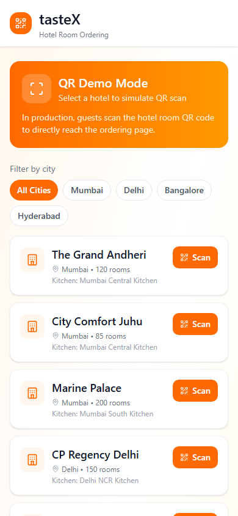
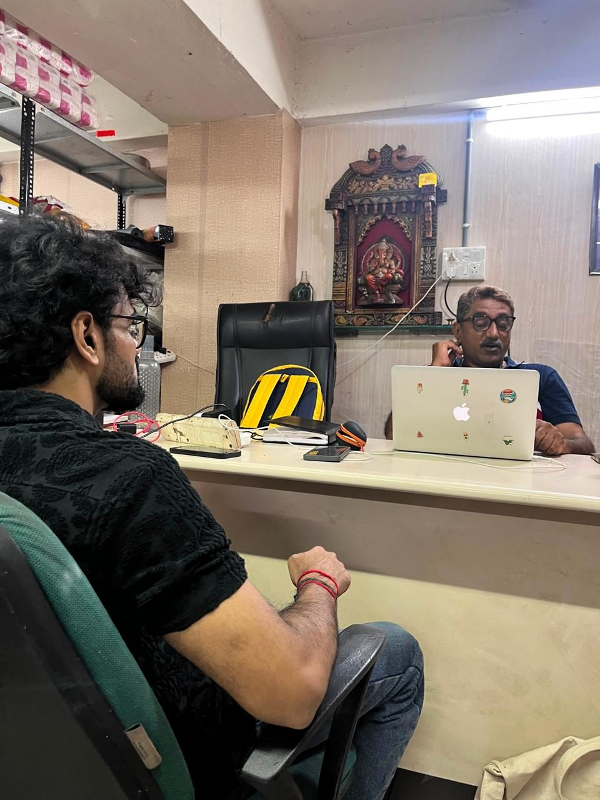
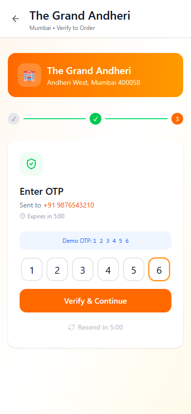
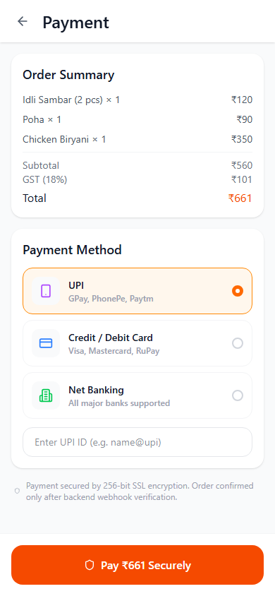
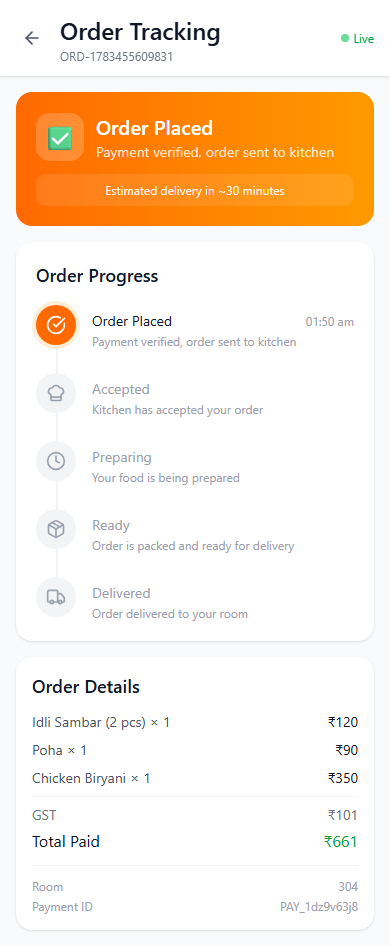
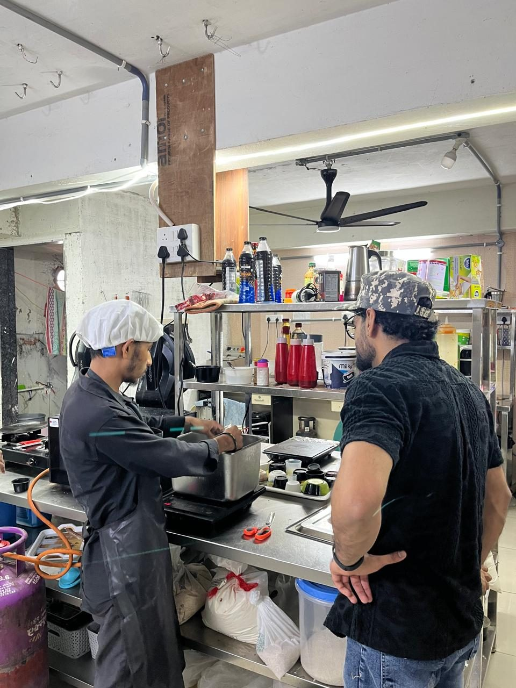
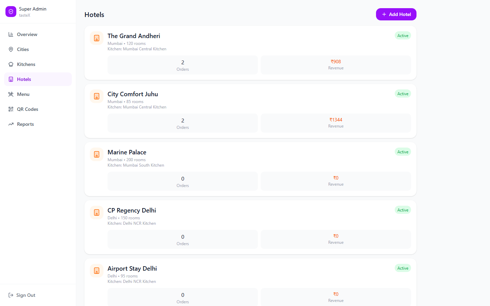
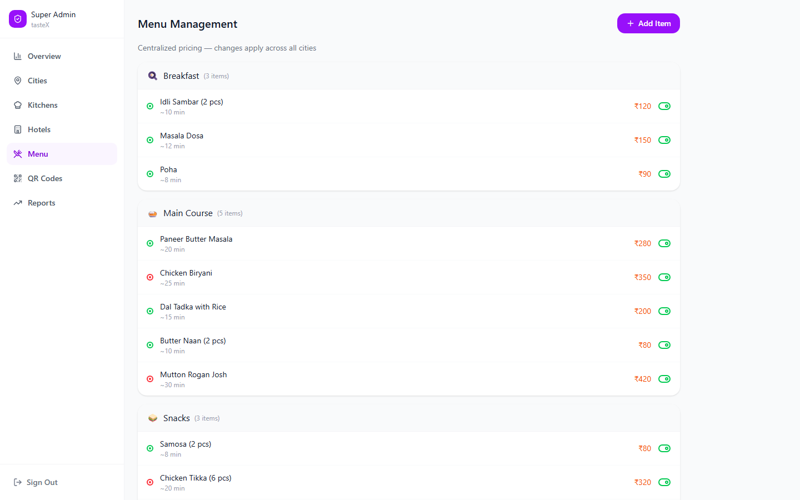
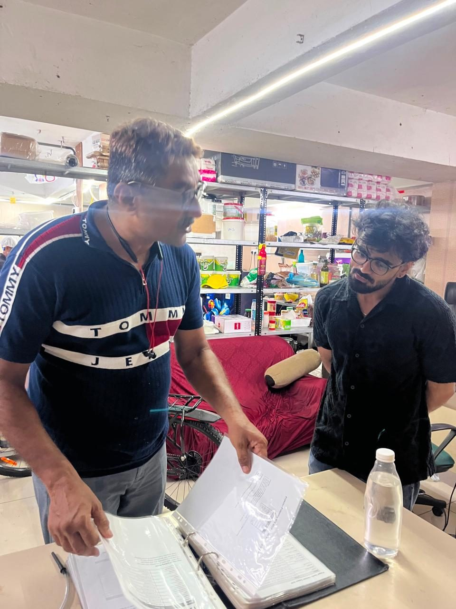
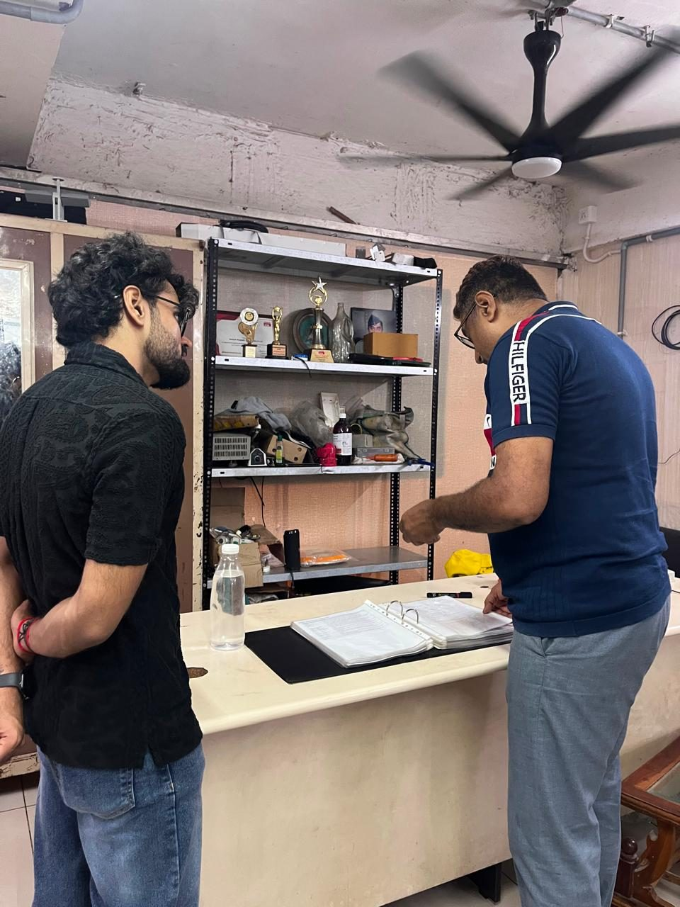

tasteX: room service, from many hotels to one kitchen
A QR-based ordering system, a kitchen queue and an admin panel that let one cloud
kitchen serve room service across several hotels, with a single source of pricing
control.
Role: Product & UX DesignerTimeline: Jan – May 2026Client: Cloud-kitchen operator (multi-hotel room service)Status: Deployed in UAT
admin.tastex.app/dashboard
About the project
tasteX is room service without the in-house kitchen. Instead of each hotel running
its own, a single central kitchen fulfils orders for several partner hotels in a city.
Guests scan a QR code in their room, and the order is routed to whichever kitchen is
mapped to that property.
I designed the whole system end to end: the guest ordering experience, the kitchen
staff’s order dashboard and the super-admin panel that runs cities, kitchens,
hotels and menus, plus the brand and design system tying all three together.
The work started on site. I spent time at the client’s cloud kitchen with the
operator and the kitchen team, because the product had to fit how the operation
already ran, not the other way round.
On site with the operator at the cloud kitchen.
🧭 Problem
A central kitchen had to route room-service orders from many hotels in a city without anyone losing track of who ordered what, or how it was being fulfilled.
💡 Solution
Three portals (QR guest ordering, a kitchen queue and a super-admin panel) built on one shared design system.
📊 Impact
Deployed in UAT. Stakeholder feedback so far: clearer order visibility for kitchen staff, better operational reporting for admins, and simpler QR ordering with no hotel or room confusion.

02 🧭 The problem
Boutique and mid-size hotels couldn’t justify a full kitchen,
but guests still expected room service.

Mapping the business with the operator: hotels, kitchens, pricing and who controls what.
A central kitchen had to route orders from many properties without anyone losing track of who ordered what, or how it was being fulfilled.
Those conversations boiled the problem down to what the system had to reconcile:
No affordable way for smaller hotels to run their own room-service kitchen.
One central kitchen reliably serving multiple hotels in the same city.
Guests never needing to know, or care, which kitchen was cooking.
Kitchen staff managing incoming orders without training overhead.
One point of control over pricing, menus and reporting across every city.
That meant three very different users on three different devices: a guest ordering
from their room, kitchen staff managing a live queue, and a super admin running the
operation. That split shaped everything else.
03 🧩 Three portals
Three portals, one system.
Portal
Device
Core job
Guest
Mobile-first (375px+)
Hotel guests order food from their room
Kitchen
Desktop (1024px+)
Kitchen staff accept, prepare and fulfil orders
Admin
Desktop (1280px+)
A super admin manages cities, kitchens, hotels, menus, pricing and reporting
Guest flow, at a glance.
📷 Scan→🔐 Verify→🍽️ Browse→💳 Pay→📦 Track
The guest flow is deliberately linear, with no back-tracking once verification starts.
A QR scan (with a manual hotel-and-room fallback), OTP verification every session since
no login persists, a menu filtered by veg/non-veg, a prepaid-only cart with a full GST
breakdown, and a confirmation screen. Order ID, ETA and kitchen routing are all handled
invisibly.
I took it through two fidelity stages: structural wireframes to lock the flow logic,
then a fully branded build with realistic menu content, live-feeling payment states and
a demo mode that simulates the QR scan.
1. QR scanDemo mode simulates the scan

2. OTP, every sessionNo login persists between visits
3. Browse the menuFiltered by veg/non-veg
4. Cart with GST, prepaidFull price breakdown

5. PayUPI, card, net banking

6. Confirm & trackOrder ID, ETA, and a live status timeline
Kitchen: a queue you can glance at between orders.

Watching a cook work through an order at the station.
Standing at the station made the brief obvious. The cook’s hands are busy, the stove is on and orders keep arriving, so the screen gets a glance, not attention.
Kitchen staff needed something to check between orders, not a dashboard that needs training. The screen leads with counts (New, Active, Done, average service time), then a list filterable by hotel and stage. Each order expands to its items and one action button that advances it: Accept, Start preparing, Mark ready, Mark delivered. A live badge calls out anything unaccepted.
Deliberately absent: pricing and revenue. Staff see what they need to cook and route, nothing else.
Active orders, filtered by hotel and status
Expanded order with the next action
Admin: central control, no local overrides.
The admin panel is the operational backbone: six tabs (Cities, Kitchens, Hotels, Menu,
QR Codes, Reports) under one hard rule. Pricing is centrally controlled and propagates
to every city, so no hotel or kitchen can quietly override a price. Each hotel maps to
exactly one kitchen, and QR codes are generated per hotel with PNG and PDF export for
printing.

Hotels, each mapped to one kitchen

Menu with centralized pricing
QR codes, one per hotel
Revenue by hotel and top items
04 🎨 Design system
One design system under three portals.
Rather than three separate products, I built one shared design system underneath all
of them.
Brand
Always “tasteX” (never TasteX or Tastex), with the tagline “Room to Order.”: direct, warm, reliable.
Colour
Orange reserved for primary actions and prices, semantic colours for order states, and a distinct accent only for the admin portal to separate operator surfaces from guest ones. 12 colour tokens in all.
Typography
Plus Jakarta Sans for display, Inter for body and UI.
Spacing
A 4px base unit, from icon gaps to section margins.
Components
A documented, versioned library of buttons, fields, badges, cards and a dedicated OTP input.
PrimaryReadyPreparingNon-vegAdminKitchen
Encoding the rules into the design.

Going through the operation’s documents to pin down the rules that couldn’t bend.
The system runs on a few non-negotiable business rules, so I documented them as design principles with a “don’t” list. Treating them as design constraints, not just backend rules, meant the UI made wrong actions structurally unavailable instead of relying on staff to remember.
Principles
Prepaid checkout only
OTP re-verification every session
One kitchen per hotel
Pricing set centrally, everywhere
Structurally unavailable
Postpaid or cash on delivery
OTP bypass
Local price overrides
Splitting a hotel across kitchens
Kitchen identity or revenue shown to the wrong role
Live Prototype
Explore the guest ordering flow
The prototype below is walkable end to end, from QR scan to order confirmation.
This file predates the tasteX rebrand, so its header and admin sidebar still read
“RoomServe”. The flows and screens are otherwise current.
Simplicity for one user often meant complexity somewhere else.
These product decisions shaped the final product more than the UI itself. They worked
within a fixed set of constraints:
Hotels cannot override pricing, and admin changes propagate to every city.
One hotel maps to exactly one kitchen.
No cash on delivery.
QR codes must uniquely identify both hotel and room.
Neither guests nor staff should need any training.
Decision 1
Local pricing vs. central pricing
Initial idea
Let every hotel maintain its own menu and pricing. Once hotels shared a kitchen, two of them could sell the same dish at different prices, confusing operations and breaking reporting.
What changed
Pricing became centrally managed, and hotels inherit menus. The result was a consistent guest experience, reliable reporting and easier operations.
Decision 2
Should guests know which kitchen cooks their food?
Initial idea
Show the assigned kitchen for transparency. Workflow mapping showed guests didn’t care about the operational structure; they just wanted food at the right room.
Decision
Guests interact only with the hotel, and routing happens behind the scenes. Cleaner, lower cognitive load, and hotels keep the guest relationship.
Decision 3
Persistent login vs. OTP every session
Initial idea
A traditional guest login. But room occupancy changes often, and a persistent session could let the next guest see someone else’s order history.
Decision
Every session starts with OTP verification. Better privacy, fewer support issues, a safer experience.
Decision 4
Kitchen dashboard vs. kitchen queue
Initial idea
Early concepts showed pricing, reports and analytics. Kitchen staff didn’t need business intelligence. They needed to know what to cook next.
Decision
A simple queue of status, order details and the next action; everything else removed. Faster onboarding, less noise, better focus.
Decision 5
QR scanning only?
Initial idea
Assume every guest scans successfully. Real rooms have damaged stickers, poor lighting and camera issues.
Decision
A manual hotel-and-room fallback. QR stays the fastest, primary path, and no guest is ever blocked from ordering.
06 🔄 What changed during design
The design evolved through testing and stakeholder feedback.

A review session with the operator, working through feedback.
Each change below came out of testing and was reviewed with the operator page by page.
Iteration 1
Kitchen dashboard
Version 1
Version 2 (shipped)
Heavy dashboard: charts, graphs, analytics
Status cards, an order queue and one call to action
Kitchen staff ignored most of it
Faster onboarding, better operational focus
Iteration 2
Guest checkout
Initial flow
Cart→Payment→Success
Testing showed guests still wondered whether the order had reached the kitchen, so we
added live tracking:
Final flow
Cart→Payment→Live tracking→Delivered
Iteration 3
Admin navigation
Initial nav order
Hotels→Cities→Menus→Kitchen
Stakeholders found this confusing because their work starts with cities, not hotels.
Navigation was reorganized around how they actually run the business:
Final nav order
Cities→Kitchens→Hotels→Menu
07 🤖 AI pipeline
Built with an AI-orchestrated pipeline.
A deliberate experiment in how far AI can go when it’s directed across the entire
build.
Design, with Figma Make
Turning wireframes into working prototypes across all three portals.
Code, with Codex
Generating the front-end from the design system and component specs instead of building screen by screen.
Deployment, with Claude Code
Setting up the CI/CD pipeline from local build to the UAT environment.
My role was direction, review and integration: giving each tool the right context
(design system rules, business logic like prepaid-only and one kitchen per hotel),
checking output against the real requirements, and stitching it into one coherent
product rather than three disconnected AI outputs.
A project of this scope would traditionally take around a year. Directed well, the
pipeline brought it to UAT in under 5 months, without cutting corners on the design
system or the business logic.
08 📊 Outcome
In UAT, ahead of rollout.
tasteX is deployed in a test environment across the guest, kitchen and admin portals.
UAT is in progress and a production rollout date hasn’t been set yet. Stakeholder
feedback so far centres on three things:
Order visibilityThe status-driven queue shows kitchen staff what’s pending, cooking and ready at a glance.Operational reportingAdmin reports are used for monthly reporting, and stakeholders have started using them for inventory tracking too.Simpler orderingThe QR code encodes hotel and room, so guests never have to identify either.
These reflect stakeholder feedback during testing, not post-launch analytics.
09 💭 Reflections
The biggest challenge wasn’t designing three interfaces. It was designing one
product that behaved consistently for three completely different users. Decisions about
permissions, business rules, ownership and operational simplicity shaped the experience
far more than visual design alone.